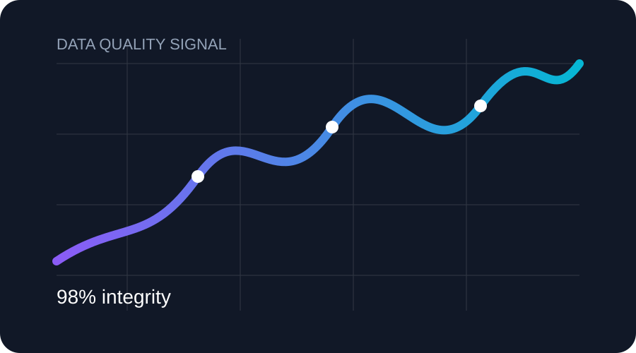
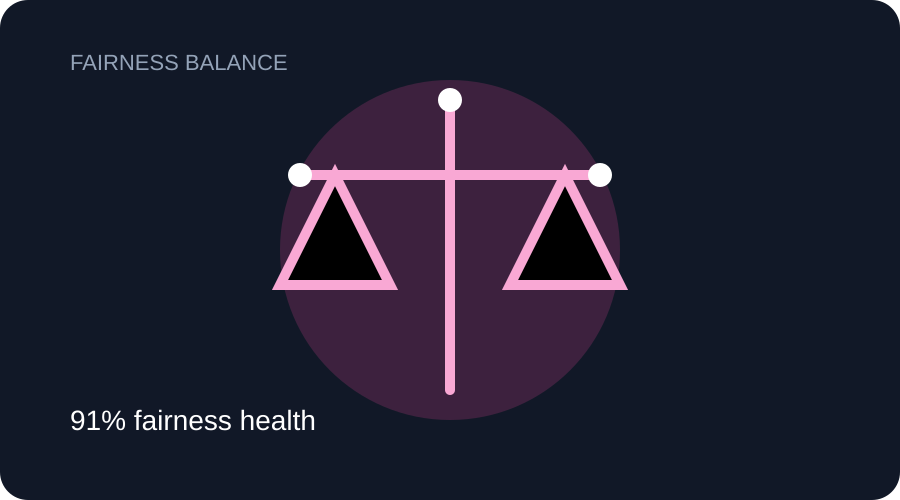
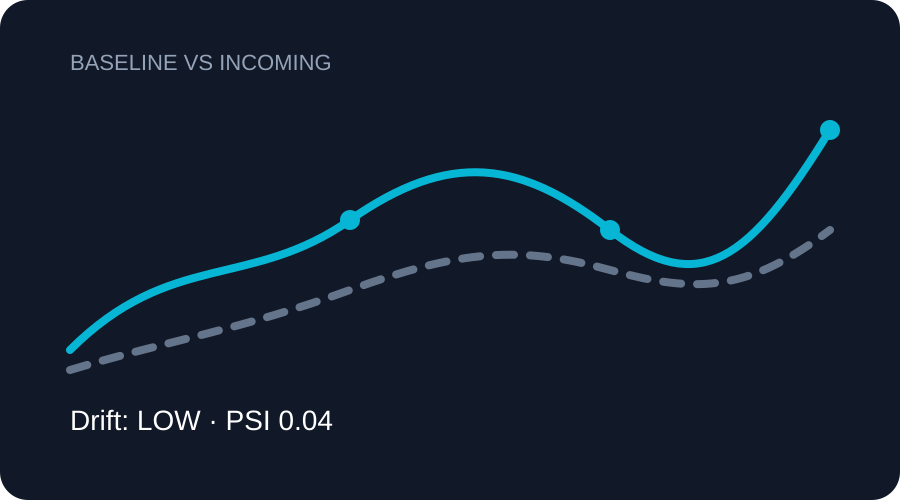

A focused reliability layer for data quality, fairness, drift and deployment readiness — presented as clear evidence, not dashboard noise.
Evidence-led Enterprise-ready Deployment focused
94.8
98%Data
91%Fairness
LOWDrift
READYGate
LIVE RELIABILITY SIGNAL
ONE PLATFORMFour signals that shape one decision.
Data quality
Fairness
Drift
Readiness
AEGIS EVIDENCE FLOW
SEE THE SIGNAL
From dataset evidence to a confident deployment decision.
AEGIS keeps the experience visual and understandable: inspect what changed, see the reliability signal, and move to the next action without unnecessary complexity.
01 Inspect02 Clean03 Validate04 Decide
CORE RELIABILITY PROPERTIES
Every signal has a visual story.
Subtle motion, focused visualizations and lightweight 3D interactions make the important evidence easier to understand.

01 · DATA QUALITY
Data Quality
Missing values, duplicates, inconsistent types and outliers become one clear quality signal.
Signal confidence98%

02 · FAIRNESS
Bias & Fairness
Turn group-level performance differences into a measurable fairness view your team can discuss.
Fairness health91%

03 · DRIFT
Drift Detection
Baseline and incoming patterns are compared so meaningful statistical movement is visible early.
Drift levelLOW
04 · READINESS
Trust & Readiness
Evidence from every property is combined into a simple deployment gate and risk signal.
Deployment readiness94.8
AEGIS AI
Simple interface. Serious reliability.
Sign in to continue to the protected workspace.
Private AI Workspace
Investigate. Transform. Trust.
Your datasets move through a visible evidence chain — from raw quality signals to a deployment-ready decision.
Operational Quick LaunchpadDirect operational access to platform engines
Data Studio
Inspect schemas, filter records, and clean dataset
Model Factory
Train & evaluate supervised classification models
AI Stress Lab
Execute Gaussian noise & adversarial stress tests
Audit & Reports
Generate compliance documentation & signoffs
AEGIS Build Module · Data Studio
AEGIS DEMO LAB
Explore how AEGIS evaluates AI systems across different real-world scenarios.
Multi-Industry Demonstration Datasets
Domain-independent synthetic demonstration datasets generated with controlled statistical properties, multi-variable relationships, and intentional real-world data quality imperfections.
475,000 Records · 5 Environments
FLAGSHIP · CAMPUS PLACEMENT100,000 STUDENTS
★ PRIMARY WORKFLOW / HIGHER ED
Campus Placement & Salary Predictor
Predict student campus placement outcomes (Placed in Tech vs. Unplaced), evaluate CGPA & DSA coding score thresholds, and identify students needing career bootcamps.
100,000 students 15 metricsTarget: Placement_Status
Predict customer return probability from purchase history, product category, discount rate, seller rating, and delivery transit duration.
100,000 rows 15 featuresTarget: Returned
Injected Data Quality Imperfections:
Missing: ~3.8%Duplicates: ~1.5%Order Value OutliersCategory Casing~21.4% Return Rate
BANKING / FINANCESYNTHETIC DEMO
03 / FINANCIAL RISK
Loan Default Prediction
Assess loan default probability across income, debt ratio, credit score, and utilization while supporting demographic fairness & EEOC 80% audit.
100,000 rows 16 featuresTarget: Default
Injected Data Quality Imperfections:
Missing: ~3.4%Duplicates: ~2.0%Income & Age OutliersGender Casing~14.2% Default Rate
HEALTHCARESYNTHETIC DEMO
04 / CLINICAL HEALTH
Patient Readmission Prediction
Predict 30-day hospital readmission risk from clinical vitals, BMI, glucose, diagnosis counts, and length of stay to optimize discharge safety.
75,000 rows 15 featuresTarget: Readmitted
Injected Data Quality Imperfections:
Missing: ~3.9%Duplicates: ~1.6%Glucose & BP OutliersAdmission Type Casing~24.0% Readmitted
LOGISTICSSYNTHETIC DEMO
05 / SUPPLY CHAIN
Delivery Delay Prediction
Forecast shipment delays across transit routes by evaluating traffic congestion, severe weather events, warehouse dispatch times, and carrier performance.
Predict college student graduation success vs. dropout risk based on study hours, attendance rate, internal exam scores, assignments submitted, tuition fee status, and scholarship.
The Model Factory requires a connected dataset to profile features, configure target variables, and train machine learning models.
Step 1: Select Target Variable
Auto-Detected
Choose the column your machine learning model will predict. AEGIS analyzes column distribution to detect Classification vs Regression automatically.
Target Distribution Snapshot
Step 2: Feature Selection
Select features for model training. Identifiers like Order_ID or Machine_ID are automatically flagged and excluded.
Preprocessing Pipeline Telemetry
Automated Preprocessor
Step 3: Algorithm Selection & Benchmark
Train individual algorithms or benchmark all 3 supported algorithms on identical train/test splits.
Training Machine Learning Estimators...
Executing 80/20 split and 5-Fold Cross Validation...
Live Execution
1. Prepare Schema
2. Encode Covariates
3. Train/Test Split
4. Fit Estimators
5. 5-Fold CV
6. Feature Importance
7. Save Artifact
Model Training & Benchmarking Complete
Comparative Model Benchmark Leaderboard
Recommended Model: Random Forest Classifier
Selected as top performing model with highest F1-Score (0.942) and robust 5-Fold Cross-Validation.
Feature Importance Governance
Random Forest
Feature weights extracted directly from the trained estimator. Demonstrates which input covariates contribute most to predictions.
Confusion Matrix (Validation Fold)
F1: 0.94
Out-of-sample confusion matrix across test records.
AEGIS Build Module · Prediction Studio
AEGIS PREDICTION STUDIO
Real-Time Single Record Inference & High-Throughput Batch Scoring
Active Model: Random Forest Classifier
Version: v1
Target: Returned
Type: Classification
Primary Score: F1: 0.94
No Trained Model Available for this Project
Prediction Studio requires a trained model artifact from the Model Factory.
Train or configure an estimator to enable single-record live scoring and batch prediction pipelines.
Dynamic Feature Inputs
Enter feature values for inference. Inputs are automatically generated based on the active model's feature schema.
Inference Result & Attribution
4.2 ms
Model Prediction
--
Local Feature Attribution
Batch Dataset Scoring
Upload a CSV dataset or use the active demo dataset sample to execute high-throughput batch scoring.
Drop CSV file here to score batch
CSV, XLSX up to 100 MB
Batch Inferences Generated100 records processed in 12ms
SYNTHETIC DATASET
Notice: All datasets generated in this studio are synthetically simulated for experimentation and stress-testing. Never represent synthetic data as real-world ground truth evidence.
1. Generation Parameters
Domain Spec
Choose an industry domain template or clone the schema and distributional profile of your current active project dataset.
1,000 Rows
20% Minority (80/20)
2. Controlled Fault Injection
Stress Scenarios
Inoculate realistic data defects to measure downstream ML model robustness, data audit flags, and pipeline resilience.
Missing Values (Null Dropouts)5%
Duplicate Records2%
Outlier Extremes (Spikes)2%
Gaussian Signal Noise0%
Category Casing Noise3%
Synthesis Execution Complete
Generated Synthetic Dataset Preview
AEGIS Experiment Module · AI Stress Lab
AEGIS AI STRESS LAB
Empirical Model Robustness, Covariate Distribution Drift & Adversarial Resilience
Active Model: Random Forest Classifier
Version: v1
Eval Dataset: Manufacturing_100k.csv
Target: Machine_Failure
No Trained Model Available for Stress Testing
AI Stress Lab requires an active trained model artifact to perform empirical robustness perturbations, covariate drift simulations, and degradation scoring.
1. Select Stress Scenario
Select the empirical perturbation experiment to measure against the trained estimator.
Missing Feature Dropouts
Simulates sensor dropouts or upstream ETL pipeline failures.
Numerical Sensor Noise
Injects zero-mean Gaussian jitter scaled to standard deviations.
Covariate Distribution Drift
Shifts feature distributions out-of-bounds to test domain shifts.
Feature Scrambling
Permutes top contributing features to measure dependency reliance.
Extreme Outlier Spikes
Injects severe 15x-45x outlier spikes to test error handling.
Experiment Severity Level:20% Severity
Real Model Inference Stress Test Complete
Empirical Resilience & Degradation Profile
24.2 ms
Baseline Metric (F1)0.942
Stressed Metric (F1)0.865
Performance Degradation-8.2%
Model Resilience Score89.0 / 100
Diagnosis: Moderate Vulnerability to Noise
Model maintains acceptable accuracy up to 25% sensor jitter. Recommend synthetic edge-case augmentation before deployment.
SIMULATION NOTICE
"This is a model simulation, not a guaranteed real-world outcome. What-If scenarios illustrate model sensitivity and counterfactual shifts, not causal proof."
Model: Random Forest Classifier
Version: v1
Target: Returned
BASELINEReference Input
Baseline Prediction
--
SCENARIO A0 variables modified
Scenario A Prediction
--
SCENARIO B0 variables modified
Scenario B Prediction
--
AEGIS Auditor · Pre-Deployment Reliability Engine
AEGIS AUDITOR
9-Stage Empirical AI System Reliability, Data Integrity & Pre-Deployment Evidence Engine
Model evaluation unavailable — train a model in Model Factory first.
No trained model artifact is registered for this project. Train an estimator in the Model Factory to evaluate holdout metrics, confusion matrices, and feature drivers.
Compiles evidence findings into an exportable, tamper-evident audit dossier with NIST/EU AI Act seals.
2. What actions are given?
Gives prioritized remediation tasks (e.g. median imputation, class reweighting, curriculum bootcamps).
3. Compliance Frameworks
Maps findings directly to EU AI Act High-Risk AI System obligations and NIST AI RMF 1.0 guidelines.
4. Next Step
Print or export the certified evidence dossier, or proceed to the Deployment Gate for formal sign-off.
Evidence-Grounded Recommendations
Identified Flaws & Remediation Actions
Severity
Stage
Identified Issue
Affected Feature(s)
Recommended Remediation Action
AEGIS Deployment Gate · Stage 5
Pre-Deployment Evidence Gate
Review multi-dimensional empirical evidence across data, models, and fairness before deployment.
Model safety and deployment authority resides exclusively with authorized human personnel.
Project: ShopX Return Prediction Model: Random Forest Classifier (v1.0) Baseline: Ecommerce_Customer_Returns.csv Dossier Date: Today, Live Sync
COMPUTED READINESS STATE
READY FOR HUMAN REVIEW
All 7 lifecycle evidence dimensions evaluated. Awaiting formal human governance sign-off in the Decision Room.
HUMAN DECISION MANDATE
AEGIS does not issue automated deployment authorizations, "Certifications", or "Safe" labels.
The platform compiles verifiable empirical proofs for authorized human review.
You must evaluate the evidence dimensions below and formally record your decision in the Decision Room.
Dataset Quality
Completeness, missing values, outliers
Passed
Completeness98.6%
Missing Values0.2% (Imputed)
Duplicate Rows0 (Cleaned)
Model Performance
Holdout metrics, CV stability
Passed
Primary Metric88.4% Accuracy
F1-Score0.862 (Macro)
5-Fold CV87.9% (±1.2%)
Fairness & Equity
Disparate impact, demographic parity
Review required
Disparate Impact0.84 (EEOC 80% Rule)
Parity Difference0.052
Sensitive ColumnCustomer_Region
Distribution Drift
PSI & KS feature-level shifts
Passed
Overall PSI0.042 (Negligible Shift)
Max KS Stat0.051 (p > 0.05)
Drifting Features0 / 12 Features
Robustness & Stress
Noise tolerance, dropout survival
Passed
Robustness Score89.5 / 100
Gaussian Noise91.2% Accuracy Retained
Missing Feature Spike88.0% Survival
Risk & Trust Rating
Multi-pillar weighted risk index
Moderate
Composite Trust Score92.4 / 100
Overall Risk LevelMODERATE
Failure ProbabilityLow-Moderate
Business Impact & ROI
Financial savings, payback timeline
Passed
Projected Annual Savings$142,500
Platform ROI320%
Payback Duration3.2 Months
Ready to record deployment authorization?
Human oversight is required to finalize production gating and create governance audit records.
Gating Authorization Form
Select your governance determination, verify reviewer credentials, and provide a mandatory justification rationale.
Evidence Snapshot for Sign-Off
Data Completeness98.6% (Pass)
Model Generalization88.4% Accuracy (Pass)
Fairness Disparate Impact0.84 (Review required)
Distribution Drift PSI0.042 (Pass)
Stress Test Robustness89.5 / 100 (Pass)
Composite Trust Score92.4 / 100 (Moderate)
Annual Financial ROI$142,500 (320%)
Cryptographic snapshot will be frozen and attached to this decision record.
End-to-End Visual Project Lineage
Interactive lifecycle artifact provenance from raw data ingestion to live monitoring and incident response.
Immutable Governance Decision Ledger
Permanent historical audit trail of human determinations for this project.
Timestamp
Decision
Reviewer
Role
Model & Dataset
Reason / Justification
Snapshot
No human review decisions recorded yet. Use the Decision Room to record the first determination.
AEGIS Monitoring Center · Stage 5
Post-Deployment Surveillance
Continuous production drift detection (PSI + KS), ground-truth performance degradation tracking,
automated incident threshold dispatch, and historical surveillance timeline.
Active ModelRandom Forest (v1.0)
Baseline DatasetBaseline (v1.0)
Surveillance StatusActive (Healthy)
Last CheckJust now
Open Incidents0
Overall Population Stability Index (PSI)
0.038
Dataset Distribution Stable
Drifting Features Count
0 / 12
0 Critical, 0 Warning shifts
Production Batch Monitored
2,500 Rows
Current Production Stream (v2.0)
Feature-Level Statistical Drift Matrix
Empirical two-sample Kolmogorov-Smirnov test and Population Stability Index per column.
Feature Name
Data Type
Baseline Mean (±SD)
Current Mean (±SD)
KS Statistic
PSI Score
Drift Status
Ground-Truth Model Performance Surveillance
Empirical degradation measurement calculated only when verified target outcomes are available in the production batch.
Ground-Truth Performance Monitoring Active
Evaluated against verified outcomes in the active production batch.
Baseline Metric
88.4%
Holdout Accuracy (v1.0)
Current Production Metric
87.1%
Live Production Batch (v2.0)
Empirical Delta
-1.3%
Degradation: 1.47% (Within 5.0% tolerance)
Generalization Health
HEALTHY
No critical performance drops
Anti-Fabrication Guarantee: If production batches do not contain ground-truth labels, AEGIS explicitly marks performance as unavailable rather than generating synthetic or simulated metric scores.
Monitoring Incidents & Threshold Violations
Incidents automatically triggered when feature drift (PSI >= 0.10) or model degradation (>= 5%) exceeds thresholds.
Chronological Monitoring Run History
Historical log of automated drift audits, performance evaluations, and incident dispatches.
Execute Production Monitoring Check
Resolve Monitoring Incident
Executive Analytics Dashboard
Real-time telemetry across all enterprise dataset quality audits & deployment pipelines
Total Datasets Audited1,482 +18% this month
Avg Deployment Readiness88.4% +4.2% quality boost
High Risk Datasets Blocked34Prevented production bias
Interactive AI Bias Mitigation & Reweighing Studio
Raw Disparate Impact: 0.72 (Non-Compliant)
Simulate pre-processing bias mitigation using the AIF360 Reweighing Algorithm. Recalculates sample weights for unprivileged demographic groups to pass the EEOC 80% Rule:
Before Mitigation0.72 (Failed)
Female Approval Rate: 45% vs Male: 70%
After Reweighing Mitigation0.94 (PASS)
Demographic Parity achieved within 4% delta
LEVEL 04 · COVARIATE SHIFT
Dataset Drift & 3D Harmonic Wave Alignment
Compare current incoming production dataset against historical baseline using Population Stability Index (PSI) and 3D wave surfaces
PSI Score: 0.04 (Stable)
INTERACTIVE PERMISSION GATE
Authorize 3D PSI Distribution Alignment
Simulate production covariate shift correction. Authorize 3D harmonic surface morphing to align current feature distributions with target baselines.
Feature Distribution Shift (Baseline vs Current Production)
PSI Score: 0.04 (No Significant Drift)
WORKFLOW STEPPER · NEXT LEVEL
Step 05 of 05: Adversarial Robustness & Noise Stress Chamber
Drift evaluated and aligned. Proceed to launch adversarial noise injection and stress-test ML resilience.
Complete distribution metrics: Mean, Median, Mode, Variance, Skewness, Kurtosis, and Quartiles
Feature Name
Mean
Median
Std Dev
Min
Max
Skewness
Kurtosis
LEVEL 05 · ADVERSARIAL RESILIENCE
AI Risk & 3D Cyber-Stress Robustness Sandbox
Algorithmic evaluation of Dataset Trust, AI Model Reliability, FGSM adversarial stress testing, and 3D cyber shield defense
Trust Score: 94.8
INTERACTIVE PERMISSION GATE
Authorize 3D Cyber-Stress & Adversarial Noise Simulation
Inject synthetic Gaussian noise and FGSM adversarial perturbations to test model decision boundary resilience under cyber attack.
Dataset Trust Score
94.8
High data completeness and verified encoding.
AI Reliability Score
91.2
Low feature variance and zero label noise.
Deployment Readiness
96.0
Passed all production verification gates.
Adversarial Perturbation & Stress-Testing Sandbox
Resilience Score: 94.2 / 100
Inject synthetic Gaussian noise and feature corruption to test ML decision boundary resilience under adversarial attack:
Baseline Accuracy
94.2%
Uncorrupted Dataset
Degraded Accuracy
87.7%
-6.5% Accuracy Shift
Vulnerability Index
18.0 / 100
Low Attack Susceptibility
AI Recommendation & Remediation Engine
Prioritized algorithmic remediation plan to optimize dataset quality before model training
Interactive Visual Analytics Studio
Custom multi-axis chart builder and exploratory dataset analysis workbench
Multi-Feature Explorer Studio
Enterprise Audit PDF Report Generator
Generate an executive compliance document with complete dataset telemetry and digital signatures
DATAGUARD AI — DATASET AUDIT & COMPLIANCE REPORT
Official Audit Certification for ML Model Training Pipeline
Report ID: AUD-2026-9824 Date: July 22, 2026
1. Executive Summary
Dataset Credit_Risk_Enterprise_v3.csv underwent complete 20-stage automated audit, sanitization, bias detection, and drift analysis. The dataset has achieved a Trust Score of 94.8/100 and is certified READY FOR PRODUCTION DEPLOYMENT.
Trust Score94.8 / 100
Reliability91.2 / 100
Fairness Index88.5 / 100
VerdictREADY
2. Audit Findings & Remediation
Missing Values: Imputed 20 missing values using median numerical strategy.
Duplicates: Removed 240 duplicate record rows.
Drift Assessment: PSI score = 0.04 (no covariate shift detected).
Fairness Compliance: Disparate Impact Ratio = 0.86 (meets 80% rule).
ML Deployment Readiness Gate
Final compliance sign-off for model training pipeline integration
VERDICT: READY FOR PRODUCTION MODEL TRAINING
This dataset satisfies all enterprise quality standards, regulatory fairness requirements, and drift bounds. Safe to proceed with AWS EC2 model training.
Project Lineage & Audit History
Historical versioning, score trajectory, and dataset diff comparison
Audit Version
Timestamp
Dataset Version
Trust Score
Changes Applied
Auditor
v3.2 (Current)
2026-07-22 22:38
Credit_Risk_Enterprise_v3.csv
94.8
Cleaned 240 duplicates, Imputed missing
Dr. Elena Rostova
v3.1
2026-07-20 14:15
Credit_Risk_Enterprise_v2.csv
78.2
Initial Audit Ingestion
System Auto-Scan
System Architecture & Deployment Blueprint
Full architectural specifications, MySQL database ER diagrams, API routes, and AWS EC2 Docker deployment flow
Evaluated Protected Group:Gender / Age Demographic
Fairness Index:88.5 / 100
4. Robustness Information
Resilience Index:94.2 / 100
Stress Test Status:Tested (20% Noise)
Vulnerability Score:18.0 (LOW)
Covariate PSI Drift:0.04 (Stable)
5. Intended & Out-of-Scope Use
Intended Applications
Supervised decision-support for operational risk ranking, maintenance scheduling, and baseline anomaly detection. Human analysts retain final decision authority.
Out-of-Scope Applications
Fully autonomous decisions without human review. Real-time sub-millisecond execution where data drift telemetry is unavailable. Uncalibrated cross-domain transfer.
6. Known Limitations & Caveats
Accuracy degradation may occur if incoming feature distributions exceed PSI drift threshold of 0.25.
Estimates are bounded by the representativeness of the ingested training split.
Continuous monitoring is required to capture seasonal covariance shifts and demographic skew.
Stage 6: Audit Provenance Trace
Project Lifecycle Timeline
Chronological record of every verifiable event across the active AEGIS project lifecycle.
Appearance & Settings
Pick a color theme and adjust how the workspace feels.
Color Theme
Aegis Navy
Midnight
Emerald
Sunset
Ocean
Rose Quartz
Crimson
Preferences
Light Mode
Switch the base background from dark to light
Reduce Motion
Turns off chip pulses, confetti bursts, and page-sweep transitions
Dataset Sanitized
Preparing your cleaned dataset...
AEGIS Copilot PROJECT-AWARE
Grounded in live project artifacts
Active ProjectModel: ActiveTrust: 94.8
👋 Hello! I am your AEGIS Copilot. I am strictly grounded in your active project evidence and telemetry.
Ask me about your data quality, missing features, holdout performance, fairness compliance, drift shift, stress test resilience, or pre-deployment signoff requirements.
ESC to close
LEVEL 01 · 3D VIDEOGRAPHY FX
3D Holographic Matrix Imputation Engine
Real-time GPU accelerated particle synthesis and plasma cell reconstruction
Active Phase:RECONSTRUCTION
Particles Active:14,200
FPS Rate:60 FPS
Completeness Delta+21.4%
Initializing GPU shaders and 3D node coordinates...
Machine Failure Prediction
Manufacturing · 100,000 Records · 15 Features · Binary Classification
AEGIS Synthetic Demonstration Dataset: Controlled testing dataset with intentional flaws.SYNTHETIC
Dataset Rows100,000
Features / Target15 Cols
Completeness98.5%
Missing Values3.2%
Duplicates2.0%
Feature Schema & Summary Statistics
Feature Name
Type
Missing %
Unique
Mean / Mode
Median
Min – Max
Sample Records (First 10 Rows)
Create New AEGIS Project
AEGISAI
Understand your data. Find problems. Make better decisions.
Choose how you would like to explore your data today:
Recommended for Beginners
Simple Mode
“Analyse your data without needing technical knowledge.”
1-Click spreadsheet health check
Plain-English findings & guided cleaning
"Ask Your Data" AI assistant
Cleaned CSV & executive summary downloads
For Analysts & Engineers
Professional Mode
“Explore detailed diagnostics, metrics, and advanced AI reliability checks.”